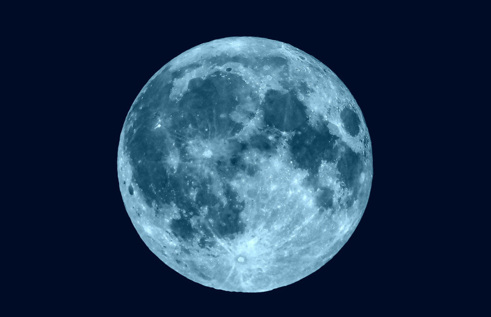
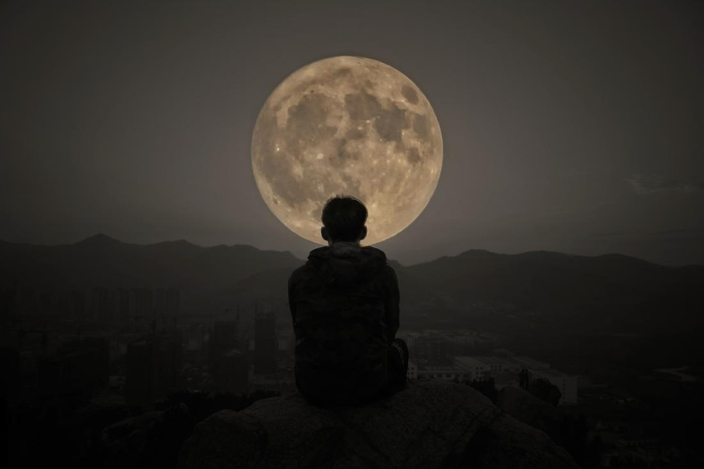
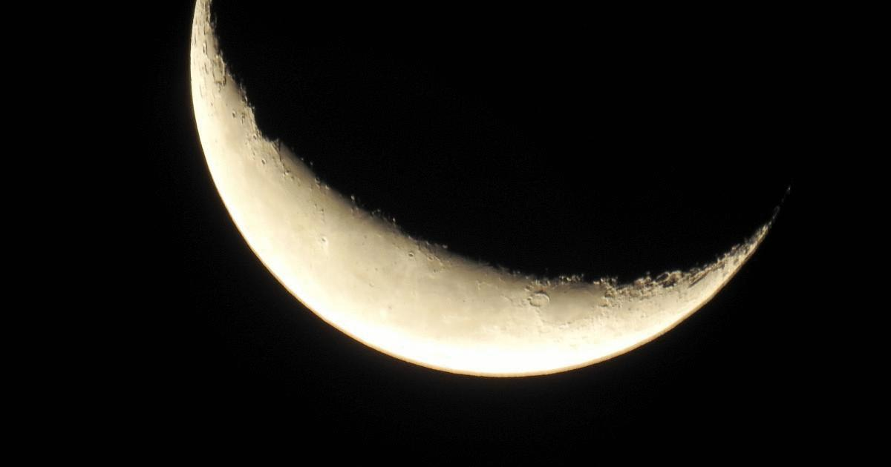
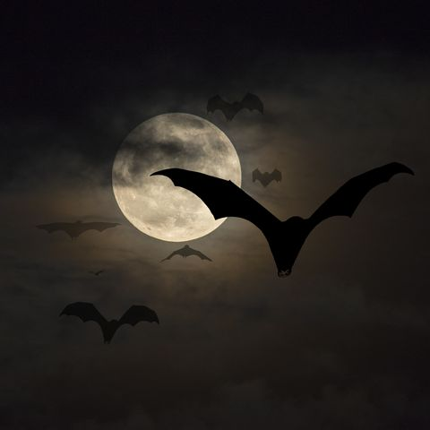

The Moon
3D Model (Touch and Rotate)
The Moon is the Earth's only natural satellite. A natural satellite is a space body that orbits a planet, a planet like object or an asteroid.
It is the fifth largest moon in the Solar System. Learn more about the other moons in the Solar System.
The average distance from the Moon to the Earth is 384403 kilometres (238857 miles).
The Moon orbits the Earth every 27.3 days.
Mons Huygens is the tallest mountain on the Moon, it is 4700 metres tall, just over half the height of Mt Everest (8848m).
The Moon rotates on its axis in around the same length of time it takes to orbit the Earth. This means that from Earth we only ever see around 60% of its surface (50% at any one time).
The side that we can see from Earth is called the near side while the other side is called the far side (it is sometimes called the dark side despite the fact that it illuminated by the Sun just as much as the near side).
The effect of gravity is only about one fifth (17%) as strong on the surface of the Moon compared to the strength of gravity on the surface of the Earth.
The Soviet Union's Luna program featured the first successful landing of an unmanned spacecraft on the surface of the Moon in 1966.
The USA's NASA Apollo 11 mission in 1969 was the first manned Moon landing.
The first person to set foot on the Moon was Neil Armstrong.
The far side of the Moon looks quite different due to its lack of maria (ancient pools of solidified lava).
The surface of the Moon features a huge number of impact craters from comets and asteroids that have collided with the surface over time. Because the Moon lacks an atmosphere or weather these craters remain well preserved.
Although research is continuing, most scientists agree that the Moon features small amounts of water.
The Moon is very hot during the day but very cold at night. The average surface temperature of the Moon is 107 degrees Celsius during the day and -153 degrees Celsius at night.
The Earth's tides are largely caused by the gravitational pull of the Moon.
The phases of the Moon are: New Moon, Crescent, First Quarter, Waxing Gibbous, Full Moon, Waning Gibbous, Last Quarter, Crescent, New Moon.
A lunar eclipse occurs when the Earth is between the Sun and the Moon.




